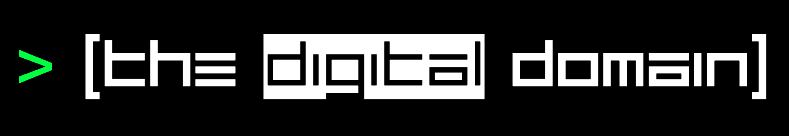

Welcome to the Homepage!
About
What is
"The Digital Domain?"
The Digital Domain is a project run by Zachary Timothy B. Bersamina of 9-Arayat. This site aims to provide insight into all the happenings in the world of technology or, more specifically, technology made for entertainment, such as phones, computers, consoles, and the likes of it. Here, you can see news about the next flagship phone, the release date of an upcoming game, and the performance of newly released hardware. So what are you waiting for? Go ahead and explore the site, now!
Video Recommendation
Watch Linus's tutorial on
"How to Try Windows 11 SAFELY"
Or alternatively, you can go to his channel by clicking here
Featured News:
Gaming

'Forza Horizon 5' Review
Reviews of Forza Horizon games often veer into reminiscing about old memories of playing racing games. The reason for this is simple: “Forza Horizon 5” offers almost everything in the history of the genre, and does it better. Read more
Technology

Sony and TSMC attempt to address chip shortages with a factory in Japan
The rumors of a Sony-TSMC chipmaking partnership were true. Nikkei reports Sony and TSMC are teaming up to build a semiconductor factory in Kumamoto, Japan that would tackle "strong global market demand" for specialized chips. Read more